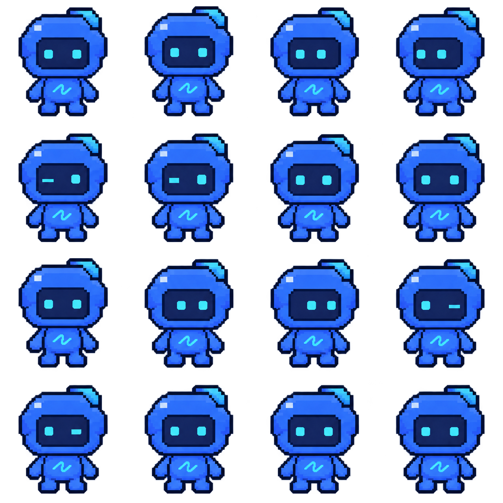

<!doctype html>
<html lang="ru">
  <meta charset="utf-8" />
  <meta name="viewport" content="width=device-width, initial-scale=1" />
  <title>Flowy - idle</title>
  <style>
    * {
      box-sizing: border-box;
    }
    body {
      margin: 0;
      min-height: 100vh;
      display: grid;
      place-items: center;
      background: #0c1018;
      color: #dfeaff;
      font: 16px system-ui;
    }
    main {
      width: min(420px, 100%);
      padding: 24px;
      text-align: center;
    }
    h1 {
      font-size: 22px;
      font-weight: 600;
    }
    p {
      color: #9eafc8;
    }
    .pet {
      width: 256px;
      height: 256px;
      margin: 24px auto;
      overflow: hidden;
    }
    .pet img {
      display: block;
      width: 400%;
      max-width: none;
      image-rendering: pixelated;
      animation: idle 4s steps(1, end) infinite;
    }
    @keyframes idle {
      0% {
        transform: translate(0, 0);
      }
      6.25% {
        transform: translate(-25%, 0);
      }
      12.5% {
        transform: translate(-50%, 0);
      }
      18.75% {
        transform: translate(-75%, 0);
      }
      25% {
        transform: translate(0, -25%);
      }
      31.25% {
        transform: translate(-25%, -25%);
      }
      37.5% {
        transform: translate(-50%, -25%);
      }
      43.75% {
        transform: translate(-75%, -25%);
      }
      50% {
        transform: translate(0, -50%);
      }
      56.25% {
        transform: translate(-25%, -50%);
      }
      62.5% {
        transform: translate(-50%, -50%);
      }
      68.75% {
        transform: translate(-75%, -50%);
      }
      75% {
        transform: translate(0, -75%);
      }
      81.25% {
        transform: translate(-25%, -75%);
      }
      87.5% {
        transform: translate(-50%, -75%);
      }
      93.75%,
      100% {
        transform: translate(-75%, -75%);
      }
    }
    label {
      display: inline-block;
      padding: 10px 16px;
      border: 1px solid #354765;
      border-radius: 10px;
      cursor: pointer;
    }
    input {
      accent-color: #39d9ee;
    }
    main:has(#pause:checked) .pet img {
      animation-play-state: paused;
    }
    main:has(#hide:checked) .pet {
      visibility: hidden;
    }
    @media (prefers-reduced-motion: reduce) {
      .pet img {
        animation: none;
      }
    }
    @media (max-width: 330px) {
      .pet {
        width: 192px;
        height: 192px;
      }
    }
  </style>
  <main>
    <h1>Flowy · idle</h1>
    <p>Дыхание, взгляд по сторонам и моргание</p>
    <div
      class="pet"
      role="img"
      aria-label="Flowy спокойно дышит, смотрит по сторонам и моргает"
    >
      
    </div>
    <label><input id="pause" type="checkbox" /> Пауза</label>
    <label><input id="hide" type="checkbox" /> Скрыть</label>
    <p>16 кадров · 4 кадра/с · цикл 4 секунды</p>
  </main>
</html>
